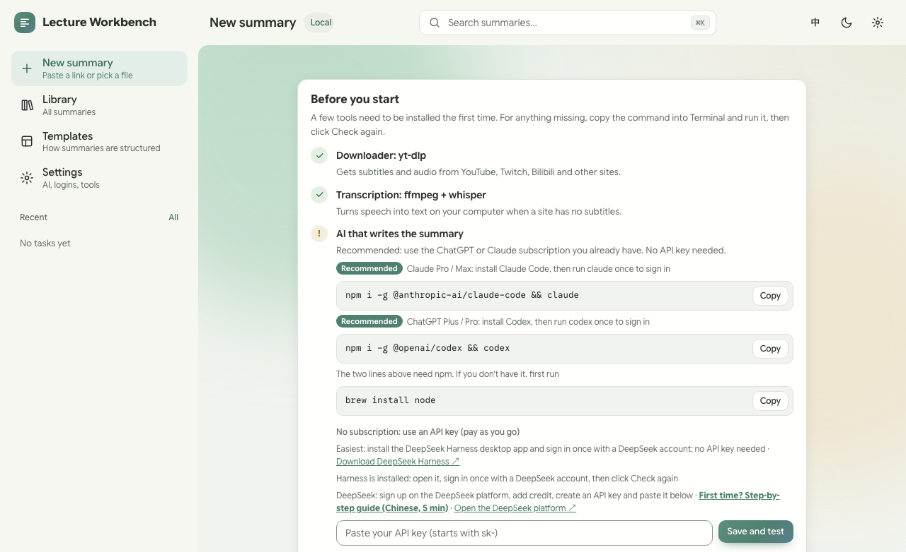
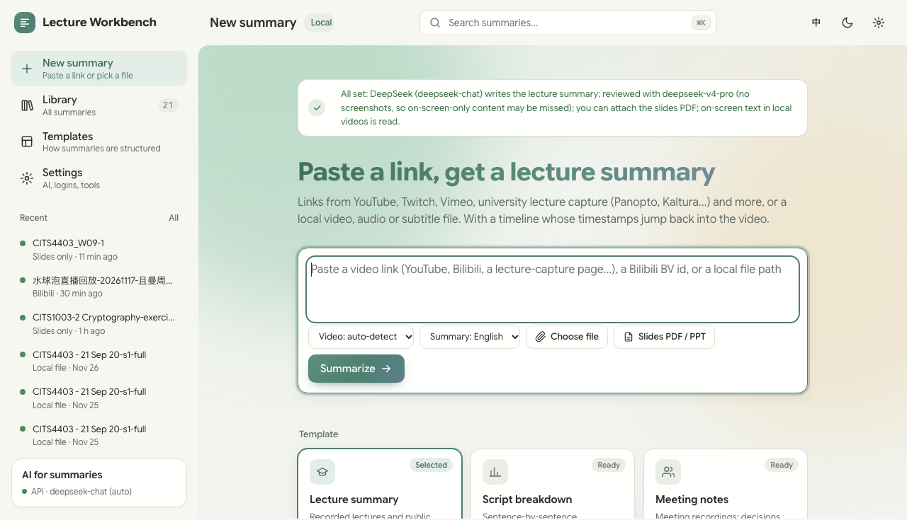

Lecture Workbench · Step-by-step guide
What it does: give it a link to an online lecture or class recording (for example a YouTube video), and it writes revision notes for you: what each part covers, the key points, and question cards for revising. Every time in the notes is clickable and jumps the video to that second.
How to read this guide: every step has up to three parts: Do what you need to do, You'll see what should appear on screen afterwards, and Note where people often get stuck. If what you see matches, go to the next step. If it doesn't, stop and send a screenshot to whoever gave you this app.
Before you start, have these ready
- A Mac or a Windows computer, connected to the internet.
- Your computer's login password (you'll type it once during setup).
- One of these, to write the notes: a ChatGPT Plus/Pro or Claude Pro/Max subscription, or a DeepSeek account.
- About 40 minutes. Most of it is downloading, and only the first time. After that it opens in seconds.
Which computer do you have?
| If… | You have | Read |
|---|
| there's an apple logo in the top-left corner of the screen | a Mac | Part 1 |
| there's a four-square Windows logo in the bottom-left corner | a Windows PC | Part 2 |
- Part 1: Install on a Mac
- Part 2: Install on Windows
- Part 3: Connect an AI to write the notes
- Part 4: Your first lecture
- Part 5: Opening it later, and fixing problems
Part 1: Install on a Mac
1
Download the app
DoGo to the project's Releases page on GitHub (github.com/camzhou831-star/lecture-summary-toolkit/releases/latest) and click lecture-workbench-mac.zip. If someone sent you the file directly, just save it.
You'll seethe file in your Downloads folder (open Finder, click Downloads on the left).
2
Unzip it and put the folder on your desktop
DoDouble-click lecture-workbench-mac.zip.
You'll seea new blue folder called lecture-workbench next to it.
DoDrag that folder onto an empty part of your desktop and let go. You'll find it there from now on.
3
Open the start file (your Mac will block it once; that's expected)
DoOpen the lecture-workbench folder and double-click the file named Start Workbench.command.
You'll seea warning that roughly says Apple can't check it for malware, with two buttons:
"Start Workbench.command" Not OpenedApple could not verify "Start Workbench.command" is free of malware that may harm your Mac or compromise your privacy.
Move to TrashDone
(Illustration; the exact wording varies a little between macOS versions.)
DoClick Done. Do not click "Move to Trash".
NoteYour Mac does this for anything that doesn't come from the App Store. The next step tells it you trust this file. You only do this once.
4
Allow it in System Settings
DoClick the apple logo in the top-left corner, choose System Settings, then click Privacy & Security in the left column. Scroll down on the right to the Security section.
You'll seea line saying "Start Workbench.command" was blocked, with an Open Anyway button.
DoClick Open Anyway. If another warning appears, click Open Anyway or Open again. When asked, type your login password and click OK.
NoteThe button only appears for about an hour after you tried to open the file. If it's not there, go back to step 3, double-click again, and come straight back here.
5
Let it install (black window)
You'll seea black window called Terminal, with lines of text appearing. The first line is:
== Lecture Workbench: checking and installing
NoteKeep this black window open whenever you use the app. Closing it stops the app.
6
It asks to install Homebrew: type y
You'll see
Homebrew is needed first (the standard way to install software on a Mac, https://brew.sh).
Install it now? You'll be asked for your Mac password once [y/N]
DoPress the y key, then return (the big ↵ key on the right).
NoteIf your Mac already has Homebrew, you won't be asked. Skip to step 9.
7
Type your login password (you won't see it; that's normal)
You'll see
Password:
DoType your login password and press return.
NoteNothing appears while you type, not even dots. Your keyboard is fine. Just type it and press return. If it was wrong, it asks again.
8
A block of text, then "Press RETURN"
You'll seeseveral lines about what Homebrew will install, ending with:
==> The Xcode Command Line Tools will be installed.
Press RETURN/ENTER to continue or any other key to abort:
DoPress return.
You'll seeInstalling Command Line Tools and Finding available software, and then nothing happens for a long time.
NoteIt's downloading Apple's "Command Line Tools". This takes 10 to 30 minutes, and the window may show nothing new for several minutes. Don't close it and don't press keys. If a small window asks whether to install the command line developer tools, click Install, then Agree.
9
It installs the remaining tools
You'll seelines like:
… installing uv
… installing yt-dlp
… installing ffmpeg
… installing whisper-cpp
…
== Speech model (about 1.5 GB, downloaded once; skipped if present)
10% (155 / 1549 MB)
…
✓ Speech model ready
Each one takes a while, and last it downloads a 1.5 GB speech model (you'll see 10%, 20%… progress). This takes another 10 to 20 minutes depending on your internet. Just wait.
10
Done: your browser opens the app
You'll seethese last lines in the black window:
== Starting the workbench at http://127.0.0.1:8770 (close this window or press Ctrl+C to stop)
== 总结工作台: http://127.0.0.1:8770
A few seconds later your browser (Safari or Chrome) opens a new page: that's the app. Setup is finished. Go to Part 3 to connect an AI.
NoteA line saying no AI is set up yet is fine; you'll do that in the browser in Part 3. If the browser doesn't open by itself, open it and type 127.0.0.1:8770 in the address bar.
Part 2: Install on Windows
The Windows version hasn't been tried on many PCs yet. If anything looks different from this guide, send a screenshot.
1
Download and extract
DoFrom the GitHub Releases page, download lecture-workbench-windows.zip. Open your Downloads folder, right-click the zip file, choose Extract All…, then Extract.
You'll seea new lecture-workbench folder, opened automatically.
NoteYou must use "Extract All". Double-clicking the zip only shows a preview, and the app won't start from there.
2
Double-click Start Workbench.bat
DoIn the folder, double-click Start Workbench.bat (some PCs hide the .bat part).
You'll seemaybe a blue box saying Windows protected your PC.
DoClick the small More info link, then the Run anyway button.
3
Let it install
You'll seea black window installing things one by one, including a 1.6 GB speech model. If Windows asks "Do you want to allow this app to make changes to your device?", click Yes.
NoteThis can take 20 to 40 minutes. Don't close the black window.
4
Your browser opens the app
You'll seethe app in your browser. Setup is finished; go to Part 3.
Part 3: Connect an AI to write the notes
The app downloads the video, turns speech into text and checks the times. Writing the notes needs an AI. When the app opens, the Before you start box at the top shows what's missing:

The first time you open the app. The first two items are ticked: downloading and transcription work. The third, "AI that writes the summary", still needs setting up.
Pick one of the options below, based on what you already have.
Option A: you pay for ChatGPT Plus/Pro or Claude Pro/Max (no extra cost)
1
Open Terminal (Mac) or PowerShell (Windows)
DoMac: press ⌘ Command + Space, type Terminal, press return. Windows: click Start, type PowerShell, press Enter.
2
Copy and run one command
DoIn the Before you start box, click Copy next to the command for the subscription you have (Claude Code for Claude, Codex for ChatGPT). Click in the Terminal window, paste with ⌘ Command + V (Windows: Ctrl + V), press return.
You'll seeit installs for a minute, then opens a sign-in page in your browser. Sign in with your ChatGPT or Claude account.
NoteIf it says npm: command not found, first copy and run the brew install node line (Windows: winget install OpenJS.NodeJS.LTS), then try again.
3
Back in the app, click "Check again"
You'll seethe box turn into one green line starting with All set:. You're ready.
Option B: you have a DeepSeek account (DeepSeek Harness, no API key)
Needs a Mac with an Apple M-series chip (apple logo → About This Mac → "Chip" says Apple M1/M2/M3/M4…) or 64-bit Windows.
1
Download and install DeepSeek Harness
DoClick Download DeepSeek Harness ↗ in the box and download the version for your computer. On a Mac, double-click the downloaded .dmg file; a window shows the Harness icon and an Applications folder. Drag the Harness icon onto the Applications folder.
NoteDon't open Harness straight from that window. Then it isn't really installed, and the app can't find it.
2
Sign in, then "Check again"
DoOpen DeepSeek Harness from Applications and sign in with your DeepSeek account. Then go back to the app and click Check again.
You'll seeAll set: DeepSeek Harness writes the lecture summary…. You can close Harness; it doesn't need to stay open.
Option C: an API key (pay as you go)
Create a DeepSeek API key at platform.deepseek.com (add a little credit first; a 1.5-hour lecture costs a few cents), or use a key from any OpenAI-compatible service. Paste it into the box and click Save and test. A step-by-step guide (in Chinese) is linked next to it.
Part 4: Your first lecture

The home page once everything is ready. The green line at the top means you're set; paste links into the big box; the green button on the right starts it.
1
Copy the lecture's link
DoOpen the lecture in your browser (for example on YouTube), click the address bar at the top, and press ⌘ Command + C (Windows: Ctrl + C).
2
Paste it into the app and click "Summarize"
DoClick the big box, paste with ⌘ Command + V (Windows: Ctrl + V), then click Summarize →.
NoteHave the lecture slides (PDF or PowerPoint)? Click Slides PDF / PPT first and pick them: the notes get page numbers and are more accurate. Only have slides, no recording? Pick the slides without pasting a link and click Summarize.
3
Wait (longer the first time)
You'll seea row of boxes ticking off one by one: Get transcript → Prepare → Write summary → Check timestamps → Check names → Review.
NoteA one-hour lecture usually takes 10 to 20 minutes in total (shorter videos are quicker). You can do something else; a ✓ appears in the browser tab when it's done.
4
Read your notes
DoScroll down to read. Click any time (like 02:00) and the video jumps there. The Chapters list on the right works the same way.
NoteAnything marked to check is something the AI wasn't sure about and didn't want to state as fact. Check it against the video or slides.
5
Keep your notes
DoClick Copy at the top right and paste into Notes, Word, Google Docs or Obsidian; or click Download to save a file. Every lecture you've done is listed under Library on the left.
Part 5: Opening it later, and fixing problems
Opening it later
1
Double-click the same start file
DoOpen the lecture-workbench folder on your desktop and double-click Start Workbench (.command on Mac, .bat on Windows). It won't install again; the browser opens in a few seconds.
NoteTo stop it, close the black window.
If something goes wrong
| What you see | What to do |
|---|
| Double-clicking the start file says it can't be opened or verified | Do Part 1, steps 3 and 4: click Done, then System Settings → Privacy & Security → Open Anyway. |
| No "Open Anyway" button in Privacy & Security | Double-click the start file again, then look again within an hour. |
| Typing your password shows nothing | That's normal. Type it and press return. |
| The black window hasn't changed for over 10 minutes | If the last line is Finding available software, it's still downloading Apple's tools; wait up to 30 minutes. After that, close the window and double-click the start file again. |
| Red text, "Error" or "错误" in the black window | Take a photo or screenshot of the whole window and send it. It's usually the network; double-clicking the start file again often fixes it. |
| The browser didn't open | Open your browser and type 127.0.0.1:8770 in the address bar. |
| The page says it can't connect | The black window was closed. Double-click the start file again. |
| DeepSeek Harness shows "Unavailable" | Usually Harness wasn't dragged into Applications (Part 3, option B), or you haven't signed in. Fix that, then click Check again. |
| "Key is wrong" or "out of credit" | Paste the key again, or add credit on the provider's website, then click Re-run. |
| A lecture failed half-way (red) | Click Re-run at the top right. If it fails again, send a screenshot. |
| A university recording needs a login and the link fails | In the app, open Settings → Site login and pick the browser you use to log in to your university. If that doesn't work, download the video and use Choose file. |
Good to know
- Videos and transcripts stay on your computer. Only the text is sent to the AI you chose, to write the notes.
- Only use recordings you're allowed to use for your own study, and don't share the downloaded videos.
- When something's unclear, a photo or screenshot explains it far better than a description.